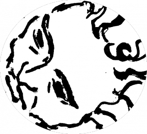
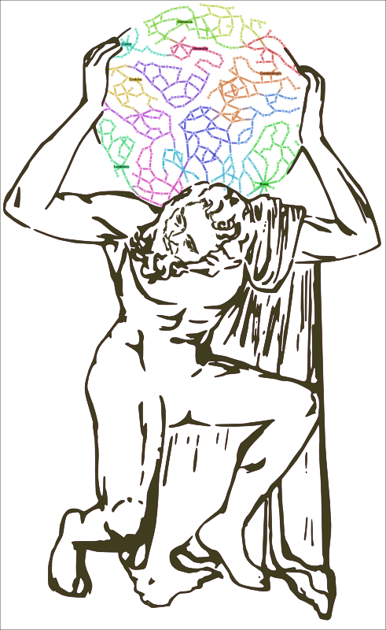

While working on a vector rendition of the Farnese Atlas, a sculpture now residing in Naples that was carved in the 2nd century as a copy of a Greek sculpture possibly dating back to the 2nd century BCE, I realized that the piece wouldn’t come off as well as I would like if it was based on a single static image of the sculpture (one such image, a photograph taken by Gabriel Seah and released CCSA3 on Wikipedia, served as the primary reference). The straight-on image, while presenting a beautiful triangle of bended arms culminating in the globe, gave a poor rendition of the powerful legs and feet of the titan. And so the final product turns the legs a bit, giving Atlas a slightly twisted torso that his chiropractor would likely caution as a poor choice for holding up the heavens. Similarly, the vectorization process (which sounds complex but was really just Inkscape‘s bitmap tracing with a few tweaked settings) too softened the details of a weary face, making the task of a mountain seem less of a trial. So the final draft, which will serve as the logo of Walter Scheidel’s “Shape of the Ancient World” project, received a Nic Cage/John Travolta, hockey title-inspired treatment that demonstrates face transplants, while cutting edge in medicine, are well-established in digital media.

The details of the piece reflect the focus of the work, again recalling interpretation. It is not that a more detailed face is an argument that the face is more important than, say, the feet, but simply that it is more important for this purpose. Moreover, the feet are important enough to justify modifying the original piece so as to better represent them to the viewer, and so in composition I demonstrate my argument that greater resolution is important for the facial features, while a slightly different perspective is important for the massive feet.
It is not merely a metaphor for but an analogy to the work done in the Digital Humanities with incomplete data presented in a constrained yet dynamic manner. The transportation network of Imperial Rome will sometimes be presented as a single timeless structure, to be analyzed as a whole object. But even when we present it in a dynamic manner, turning on and off certain sections based on period or season or other restrictions, we’re still only presenting the equivalent of a copy of a copy, no matter how masterful. As I’ve said before, humanities scholars should not strive to present cold data in an antiseptic manner finally “proving” the history of so-and-so or the style of such-and-such, but rather they should be comfortable noting that a piece of Digital Humanities scholarship is an interpretation using new means and methods. The primacy of interpretation in their work and their comfort level with interpretation makes humanities scholars particularly well-suited for a modern era overwhelmed with available data and a variety of accessible tools to analyze that data.
Update: Since somebody just asked me, I thought I’d make a quick note for those of you hoping to take a photo and put it into Inkscape and get an image like the one above. Inkscape’s bitmap to vector function was used on an ink drawing based on the Farnese Atlas photograph and that drawing had itself been pre-processed a bit in GIMP. As far as I know, those kinds of filters still aren’t at the level to provide this kind of result straight from a photo.